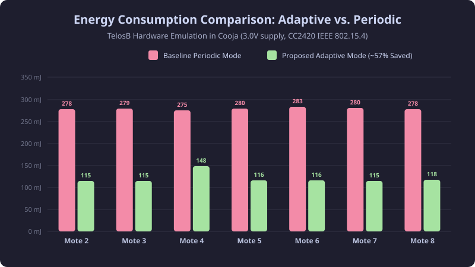
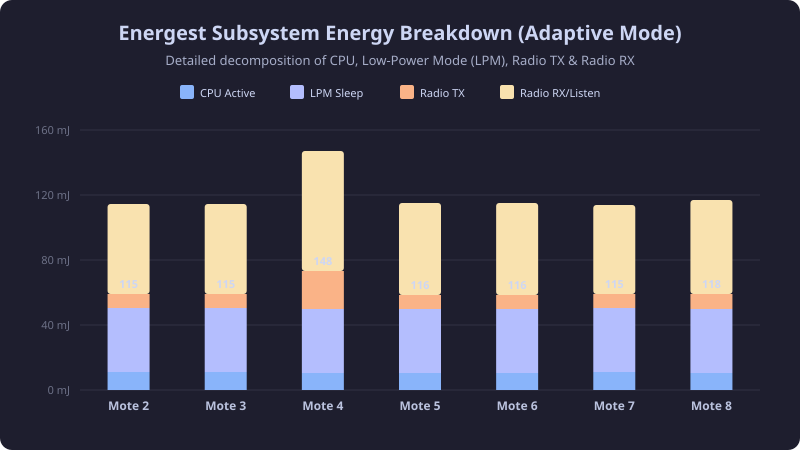
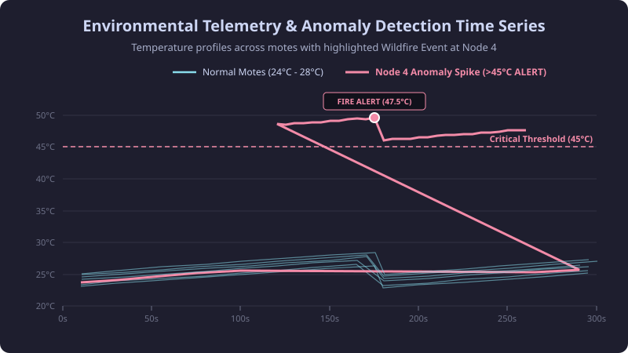

IEEE 802.15.4 • 6LoWPAN • RPL • Contiki / Cooja
Smart Environmental Monitoring & Energy-Efficient Data Collection
Wireless Sensor Network Telemetry, Energest Power Profiling & Dynamic Duty Cycling
Simulation Telemetry Active
Packet Delivery Ratio (PDR)
100.0%
vs. 93.7% in congested periodic baseline
Redundant Radio Transmissions Suppressed
70.8%
238 out of 336 samples saved via adaptive delta
Net Network Energy Reduction
56.8%
844.7 mJ (Adaptive) vs. 1953.2 mJ (Periodic)
Average Node Power Draw
0.40 mW
Estimated node lifetime: ~8.7 years on 2x AA
Wireless Sensor Node Registry & Health Matrix
TelosB / Tmote Sky hardware profiles| Node ID | Network Role | Temperature | Humidity | Ambient Light | CO2 / Air Quality | Battery (mV) | Radio Suppression | Total Energy | Status |
|---|
Cooja Simulation Experimental Benchmark Charts
Publication-grade vector analysis generated from simulation logsEnergy Consumption: Adaptive vs. Periodic

Energest Subsystem Power Breakdown

Environmental Telemetry & Anomaly Spike

Reliability (PDR) vs. Radio Suppression